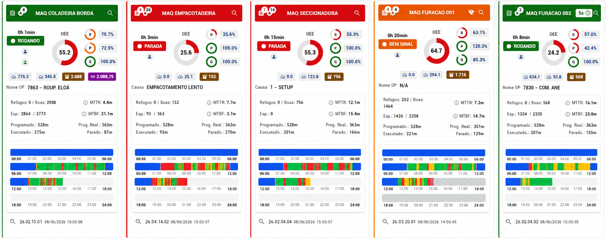

Sensoriamento industrial
Dados reais da máquina, sem depender de planilha ou memória.
A MESTTI conecta sensores às máquinas para coletar produção, paradas e disponibilidade automaticamente — em tempo real, direto do chão de fábrica.
Instalação orientada, leitura confiável e histórico por máquina, setor e turno para apoiar OEE, PCP e gestão.


Hardware MESTTI integrado à nuvem para leitura contínua.
Sem sensor
Quanto sua fábrica produziu hoje? Se a resposta demora, o problema já começou.
Sem coleta automática, a gestão depende de apontamento manual, estimativa ou conferência no fim do turno. Isso atrasa a ação e enfraquece o controle da produção.
- não se sabe em tempo real se a máquina está rodando ou parada;
- a quantidade produzida fica sujeita a erro ou esquecimento;
- paradas só aparecem quando alguém percebe ou registra;
- OEE e disponibilidade ficam baseados em dados frágeis;
- o gestor reage tarde ao que já virou perda.
O sensor transforma o funcionamento da máquina em informação para a gestão.
O que entra no sistema
Sensoriamento de chão de fábrica conectado ao MESTTI.
Sensores industriais capturam o que acontece na linha — contagem, máquina ligada/desligada, metro linear e demais modelos do catálogo — e enviam os dados para o painel MESTTI.
- Instalação orientada de sensores por máquina, posto ou linha
- Leitura em tempo real no painel MESTTI, com vínculo a ordens, máquinas e turnos
- Apontamento automático de produção e base para cálculo de OEE e perdas
- Alertas configuráveis e histórico para auditoria e melhoria contínua
- Buffer local: dados continuam sendo gravados mesmo com queda de internet
- Integração com apontamento digital para contexto completo da operação
Na prática
Perguntas que o sensor responde todos os dias.
Essas respostas precisam estar disponíveis para o gestor no momento certo — não no fim do turno.
Painel de monitoramento
Veja sensores e produção em uma única visão.
Acompanhe máquinas, paradas, quantidade produzida e disponibilidade em tempo real — com os dados dos sensores integrados ao painel MESTTI.

Implantação
Comece a medir sem parar a fábrica.
A implantação é prática e pouco invasiva. Pequenas e médias indústrias também precisam saber quanto produzem, onde perdem tempo e por que a produção não acompanha o planejado.
Preciso parar a máquina para instalar?
A proposta é realizar instalação orientada, respeitando a rotina da fábrica.
Funciona com oscilação de internet?
Sim. Os sensores possuem memória local e sincronizam com a nuvem ao restabelecer a conexão.
Preciso trocar todo o apontamento manual?
O sensor reduz a dependência do manual. Motivos de parada e contexto operacional continuam sendo registrados pelo apontamento digital.
Próximo passo
Quer saber como o sensoriamento se encaixa na sua fábrica?
Preencha o formulário e vamos entender suas máquinas, processos e como a coleta automática pode trazer mais clareza para a gestão.
Sem compromisso. Vamos entender sua realidade e mostrar caminhos práticos.